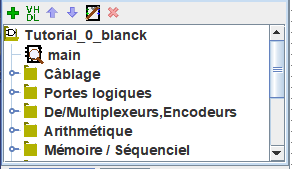
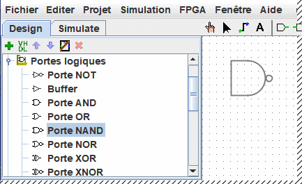
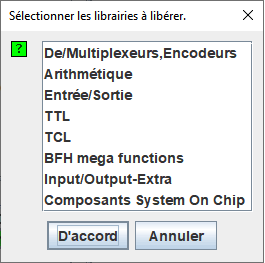

Le panneau de navigation
|  | Le panneau de navigation a deux fonctions. Il peut présenter les circuits en cours de simulation dans la vue simulation ou comme ici les circuits dans le haut de la liste et les librairies plus bas représentées par des icônes de dossiers. Ces librairies regroupent les outils que vous pouvez utiliser dans vos réalisations. |
Pour accéder aux composants d'une bibliothèque, il suffit d'ouvrir la librairie (un clic-droit sur la petite cle ou un double-clic sur le dossier) puis de sélectionner l'outil (un clic-droit sur l'outil). Puis déplacer le curseur de la souris sur le canevas et la un dessin fantôme de l'outil suivra le curseur de la souris jusque a ce que vous effectuiez le dernier clic sur la surface pour le déposer a l'emplacement choisi.
Ci-dessous vous voyez ouverte la librairie des portes logique et la porte NAND est sélectionnée. Le fantôme de la porte suit le curseur. Au prochain clic la porte sera insérée dans le circuit.

Maintenant, si vous regardez la sélection dans la bibliothèque de portes, vous remarquerez que nous n'aurions pas eu à développer de circuits XOR: une telle porte fait déjà partie de Logisim.
Logisim inclut un certain nombre de librairies à la création d'un projet. Elles sont représentées succinctement ici:
- Câblage : Les composants nécessaires aux éléments de câblage.
- Portes logiques : Les composants qui réalisent de simples fonctions logiques.
- De/Multiplexeurs..: Des composants combinatoires plus complexes comme des multiplexeurs et des décodeurs.
- Arithmétique : Des composants qui effectuent des opérations arithmétiques.
- Mémoire...: Les composants qui mémorisent des informations comme des bascules, des registres et de la RAM et ROM.
- Entrée/Sortie : Des composants qui sont là pour permettre des interactions avec l'utilisateur.
- TTL : Les composant classiques de la famille TTL 74xxx avec le boitirt DIL.
- TCL : Non documenté
- HDL-IP : Non documenté BFH mega function : Non documenté
- Input/Output-Extra : Non documenté
- System On Chip components : Composant inclus dans plusieurs architectures de FPGAs
Librairies
Logisim vous permet d'ajouter d'autres librairies en utilisant le menu | Projet |→| Charger une librairie | ou en effectuant un clic-gauche sur le dossier de la racine de l'explorateur de projet. Vous aurez le choix entre trois catégories de librairies.
- Les librairies intégrées sont des librairies qui sont distribuées avec Logisim. Ces dernières sont documentées dans Librairie de référence.
- Les librairies Logisim sont des projets construits dans Logisim et sauvegardées comme des projets logisim. Vous pouvez développer un ensemble de circuits dans un seul projet (comme décrit dans la section Design hiérarchique de ce guide) et utiliser cet ensemble de circuits comme une librairie dans d'autres projets.
-
Les librairies JAR sont des librairies développées en Java, mais qui ne sont pas distribuées avec Logisim. Vous pouvez télécharger une librairie écrite par quelqu'un d'autre, ou vous pouvez écrire votre propre librairie, comme expliqué dans la section Librairies Jar de ce guide. Développer une librairie JAR est bien plus difficile que de développer une librairie Logisim, mais le composant peut être bien plus riche en incluant des attributs et des interactions avec l'utilisateur. Les librairies intégrées (autres que "Base") sont écrites en utilisant les mêmes API que les librairies JAR. Elles démontrent les possibilités, en matière de fonctionnalité, qu'une librairie JAR peut supporter.
Certaines des librairies JAR sont distribuées sans aucune information au sujet de la classe java initial. Quand un tel JAR est chargé, Logisim vous demandera alors d'indiquer le nom de cette classe. Ce nom de la classe devrait être fourni par celui qui distribue le fichier JAR.
Pour supprimer une librairie, choisissez depuis le menu | Projet |→| enlever Librairie ... |. Une fenêtre de sélection sera affichée (ci-dessous). Logisim vous empêchera d'enlever des librairies qui contiennent des composants actuellement utilisés dans le circuit, qui apparaissent dans la barre d'outils ou qui sont liées aux événements de souris.

Il est aussi possible de le faire en exécutant un clic-gauche sur la librairie à désactiver.
Par ailleurs, une librairie d'un point de vue technique contient des outils, et non des composants. Par conséquent, dans la librairie de base vous trouvez l'outil "Pousser" ( ), l'outil "Editer" (
), l'outil "Editer" ( ), et d'autres outils qui ne correspondent pas directement à des composants particuliers. La plupart des librairies contiennent des outils pour ajouter des composants à nos circuits.
), et d'autres outils qui ne correspondent pas directement à des composants particuliers. La plupart des librairies contiennent des outils pour ajouter des composants à nos circuits.
Suite: Les barres d'outils.